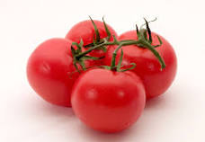

Tomat
Tomat (Solanum lycopersicum)merupakan tanaman semusim yang tergolong dalam keluarga Solanaceae, menghasilkan buah yang, meskipun botanisnya diklasifikasikan sebagai berry, umumnya digunakan sebagai sayuran. Tomat memiliki variasi ukuran, bentuk, dan warna, termasuk merah, oranye, kuning, hijau, dan ungu. Kaya akan nutrisi seperti vitamin C, vitamin A, dan kalium, tomat menjadi bagian penting dari diet sehat. Dengan penggunaan yang luas dalam masakan, mulai dari saus hingga sup, serta kontribusinya pada industri makanan melalui produk turunan seperti saus tomat dan pasta tomat, tomat menjadi salah satu komponen utama dalam keanekaragaman kuliner global. Selain itu, tomat dihubungkan dengan berbagai manfaat kesehatan, terutama melalui kandungan antioksidannya, termasuk likopen yang telah dikaitkan dengan berbagai manfaat positif.Klasifikasi Tomat
Tanaman Tomat termasuk dalam genus Solanum lycopersicum. Berikut adalah klasifikasi Tomat hingga tingkat spesies:
- Kingdom: Plantae (Tumbuhan)
- Divisi: Magnoliophyta
- Kelas: Magnoliopsida
- Order: Solanales
- Familia: Solanaceae (familia teratai-terataian)
- Genus: Solanum
- Species: Lycopersicum
Dengan demikian, secara ilmiah, tomat diklasifikasikan sebagai anggota Kingdom Plantae, Divisi Magnoliophyta, Kelas Magnoliopsida, Ordo Solanales, Famili Solanaceae, Genus Solanum, dan Spesies Lycopersicum. Klasifikasi ini membantu para ilmuwan dan peneliti dalam merinci hubungan evolusioner dan karakteristik tanaman ini dalam kerangka taksonomi yang sistematis.
Tips Perawatan
- Lokasi Penanaman: Pilih lokasi dengan sinar matahari penuh, minimal 6-8 jam per hari, untuk memastikan pertumbuhan yang optimal.
- Penanaman dan Pemeliharaan Tanah: Tanam tomat setelah risiko beku berlalu dan pastikan memberikan jarak yang cukup antara tanaman untuk memastikan sirkulasi udara yang optimal. Sebelum penanaman, berikan pupuk organik atau kompos untuk meningkatkan kesuburan tanah.
- Perlindungan dari Hama dan Penyakit: Periksa secara teratur untuk tanda-tanda hama dan serangan penyakit seperti ulat, kutu daun, atau penyakit daun, dan terapkan metode pengendalian organik atau bahan kimia sesuai kebutuhan.
- Pemangkasan: Pemangkasan ringan dapat membantu mengontrol pertumbuhan tanaman, meningkatkan sirkulasi udara, dan memastikan fokus energi pada pembentukan buah.
- Irigasi: Pertahankan kelembaban tanah yang konsisten. Hindari penyiraman berlebihan yang dapat menyebabkan pembusukan akar.